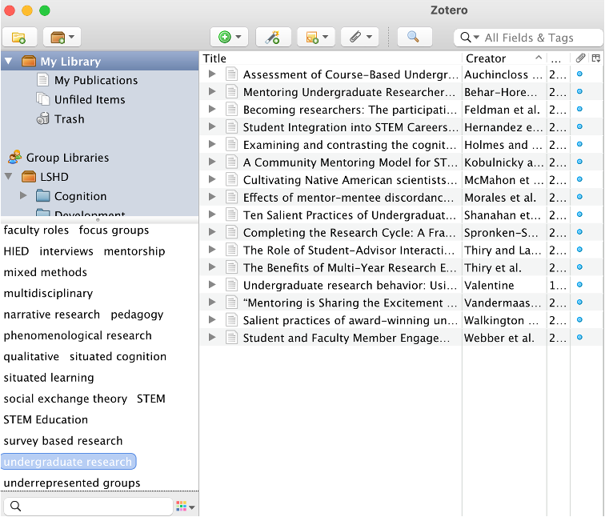

class: center, middle, inverse, title-slide # Selecting a Topic and Detecting Literature for Review ## EDP 612 Week 2 ### Dr. Abhik Roy --- <script src="https://ajax.googleapis.com/ajax/libs/jquery/3.6.0/jquery.min.js"></script> <script type="text/x-mathjax-config"> MathJax.Hub.Register.StartupHook("TeX Jax Ready",function () { MathJax.Hub.Insert(MathJax.InputJax.TeX.Definitions.macros,{ cancel: ["Extension","cancel"], bcancel: ["Extension","cancel"], xcancel: ["Extension","cancel"], cancelto: ["Extension","cancel"] }); }); </script> <style> section { display: flex; display: -webkit-flex; } section p { margin: auto; } section { height: 600px; width: 60%; margin: auto; border-radius: 20px; background-color: #212121; } section p { text-align: center; font-size: 30px; background-color: #212121; border-radius: 20px; font-family: Roboto Condensed; font-style: bold; padding: 15px; color: #bff4ee; } #center { text-align: center; } .center p { margin: 0; position: absolute; top: 50%; left: 50%; -ms-transform: translate(-50%, -50%); transform: translate(-50%, -50%); } .center2 { margin: 0; position: absolute; top: 50%; left: 50%; -ms-transform: translate(-50%, -50%); transform: translate(-50%, -50%); } .tab { display: inline-block; margin-left: 40px; } </style> <style type="text/css"> .highlight-last-item > ul > li, .highlight-last-item > ol > li { opacity: 0.5; } .highlight-last-item > ul > li:last-of-type, .highlight-last-item > ol > li:last-of-type { opacity: 1; } </style> <div> <style type="text/css">.xaringan-extra-logo { width: 110px; height: 128px; z-index: 0; background-image: url(/Users/skynet/Documents/WVU/Teaching/GitHub.nosync/edp612/static/img/course_hex.png); background-size: contain; background-repeat: no-repeat; position: absolute; top:1em;right:1em; } </style> <script>(function () { let tries = 0 function addLogo () { if (typeof slideshow === 'undefined') { tries += 1 if (tries < 10) { setTimeout(addLogo, 100) } } else { document.querySelectorAll('.remark-slide-content:not(.title-slide):not(.inverse):not(.hide_logo)') .forEach(function (slide) { const logo = document.createElement('a') logo.classList = 'xaringan-extra-logo' logo.href = 'https://edp612.asocialdatascientist.com' slide.appendChild(logo) }) } } document.addEventListener('DOMContentLoaded', addLogo) })()</script> </div> # Research Stages -- 1. Identifying a research problem -- >- research purpose(s) *or* -- >- research question(s) *or* -- >- both! -- <ol start=2> <li> Writing a research proposal </ol> -- <ol start=3> <li> Conducting a pilot study </ol> -- >- optional but ***highly*** recommended -- >- we will get into the reason later in the term -- <ol start=4> <li> Conducting the main study </ol> -- <ol start=5> <li> Preparing a report </ol> -- --- # Ways to Find a Research Question -- - Replicate and extent research -- - Research assistantship -- - Theory-based research -- - Volunteer to assist with research -- - Work on a team project --- ## Replicate and Extend Research -- - Replicates and extends the study of a problem that was investigated by other researchers -- - Extension methods: -- >- Check the findings of a “breakthrough” study -- >- Check the validity of research findings across different populations -- >- Check trends or change over time -- >- Check findings using different methodology -- >- Develop more effective or efficient interventions --- ## Research assistantship - Look for an opportunity to conduct research under someone. -- >- Typically paid and covers tuition (but not fees!) -- >- Requires 20 hours per week on average (but that can fluctuate) -- <br> - Even if its not something you are directly interested in, often the experience matters -- >- Other opportunities -- >- Higher salaries outside of academia -- >- Publications -- >- Recognition -- >- Recommendations --- ## Theory-Based Research -- - Tests a developed theory -- - Supports a theory but never proves it! -- - Advantages: -- >- Yields important findings -- >- Theory can provide a rational basis for explaining or interpreting the results of research --- ## Volunteer to assist with research -- - Same advantages as a research assistantship but -- - you can often work as much or as little as you wish -- - is typically unpaid or paid on an hourly basis --- ## Working on Team Projects -- <center> Conduct studies that fall within a larger project’s scope </center> -- .pull-left[ <b><i>Advantages</i></b><br> - Experience with the dynamics of a research team - Learn from team members - Participate in a larger, more sophisticated study - Financial support is usually available ] -- .pull-right[ <b><i>Disadvantages</i></b><br> - Disagreements of ownership of data - Incompatible goals among team members - Interdependency and/or uncooperative team members ] --- ### Note: Not Being Pushy but Needing to Be Straightforward -- </center> **You should always ask what potential benefits may come from your work** </center> -- >- Authorships -- >- Independence -- >- Presentations -- >- Proposals -- >- Monetary --- # Preparing a Research Proposal -- - Detailed plan of the study, aka blueprint -- >- Absolutely necessary for <span style="color:#428bca">quantitative</span> research -- >- May or may not be necessary for <span style="color:#d9534f">qualitative</span> research -- - Sections 1. Introduction -- 2. Literature review -- 3. Research design -- 4. Research method -- 5. Data analysis -- 6. Human subjects protection (if applicable) -- 7. Anticipated timeline --- ## Introduction Section -- + States research problem -- + Explains how the proposed study is grounded in research literature -- + Suggests its potential contribution to research knowledge and educational practice -- + Lists the research hypotheses, questions, or objectives --- ## Research Hypotheses -- + <span style="color:#428bca">Quantitative</span> research -- + Directional hypothesis + Null hypothesis + Qualitative research + Formal hypothesis not typically used --- ## Literature Review Section -- + Findings of other studies in the line of research that includes each critical study -- >- Findings of students in lines of research that have some degree of relevance to the proposed study -- >- Critique of methods used in previous research -- >- Conclusions drawn by researchers who previously have reviewed the literature relevant to your proposed study -- >- Applications, if any, of previous research findings to professional practice --- ## Research Methods Section -- + Sampling procedures -- + <span style="color:#428bca">Quantitative</span>: Explain how sample is representative of population -- + <span style="color:#d9534f">Qualitative</span>: Explain why case selected will yield significant insights about phenomenon of interest -- + Data collection procedures -- + Instruments -- + Variables proposed to be measured -- + Validity -- + Reliability -- + Steps in measurement -- + Other procedures critical to study --- ## Data Analysis Section -- + Tentative plan for data analysis -- + Procedures for scoring tests or other measures -- + Procedures for creating computer data files --- ## Protection of Human Subjects Section -- + If involve human subjects, must include -- >- [Completion of Applicable CITI Training Modules](https://human.research.wvu.edu/get-started/training/citi-ethics-training) -- >- [IRB Approval](https://human.research.wvu.edu/get-started/training/wvu-e-submission-system) --- ## Time Line Section -- + Each step of study with approximate date when to be completed -- >- Estimated number of hours of days required per step -- >- Provide a linear visualization if possible --- # Conducting a Pilot Study -- + Small scale testing of the procedures that you plan to use in the main study -- >- Revisions of procedures based on pilot study findings -- >- Use multiple iterations if needed --- # Thesis/Dissertation Organization -- - Traditional Oxford design -- - Slowly becoming obselete -- - Publications preferred --- ## Front -- - Common Format/not Mandated -- - Title page >- Preface and acknowledgements >- Table of contents >- List of tables >- List of figures --- ## Body -- - Common Format/not Mandated -- - First three chapters correspond to proposal >- Chapter 1: Introduction >- Chapter 2: Literature Review >- Chapter 3: Research Method >- Chapter 4: Results >- Chapter 5: Discussion --- ### Chapter 1: Introduction -- + General statement of the problem -- >- Significance of the study >- Research hypotheses, questions, objectives, or purposes --- ### Chapter 2: Review of Literature -- + Review of previous research and opinion -- >- Interpretive summary of the current state of knowledge --- ### Chapter 3: Research Method -- + Research design -- >- Sample selection and procedures for human subject protection >- Measures >- Other procedures >- Time line --- ### Chapter 4: Results -- + Overview of statistical procedures -- >- Description of results for each hypothesis, question, objective, or purpose >- Supplemental analyses --- ### Chapter 5: Discussion -- + Interpretation of each result -- -- >- Limitations of the study >- Implications for future research >- Implications for practice --- ## Organization -- - Common Format/not Mandated -- >- Bibliography >- Appendixes --- ## Dissemination -- >- Journals >- Professional meetings --- ## Ethical Considerations - Honestly is always the best policy -- - It is very difficult to get away with unethical practices in academia, though it unfortuantely still happens --- ### Planning and Designing Research -- + Researcher qualifications -- >- Conflict of interest >- Neglect of important topics --- ### Research Methodology + Control group experience -- >- Use of deception >>- Dehoaxing >>- Desensitization -- >- Use of tests -- >- Termination of treatment conditions -- >- Data collection and analysis --- ### Reporting of Research -- + Authorship -- >- Ethical Standards of the American Educational Research Association -- >- Plagiarism, paraphragiarism, and overuse of quotes -- >- Partial and dual publication --- ### Formal Regulations -- + Statements of ethical principles by governmental and professional organizations + Ethical Standards of the American Educational Research Association + Ethical Principles of Psychologists and Code of Conduct + Institutional Review Boards --- # Institutional Review Boards -- + IRB has at least five members and their qualifications must satisfy criteria specified in Federal code -- + Research that is a “systematic investigation…designed to contribute to generalizable knowledge” must undergo IRB approval --- # Criteria for IRB Approval of Research + Risks to subjects are minimized -- >- Risks to subjects are reasonable in relation to anticipated benefits, if any, to subjects, and the importance of the knowledge that may reasonably be expected to result -- >- Selection of subjects is equitable -- >- Informed consent will be sought from each prospective subject or the subject’s legally authorized representative --- # Criteria for IRB Approval of Research + Informed consent will be documented appropriately -- >- When appropriate, the research plan makes adequate provision for monitoring the data collected to ensure the safety of subjects -- >- When appropriate, there are adequate provisions to protect the privacy of subjects and to maintain the confidentiality of data -- >- When some or all of the subjects are likely to be vulnerable to coercion or undue influence, additional safeguards have been included in the study to protect the rights and welfare of these subjects --- # Site Relations in Educational Research + Location of a research site -- >- Securing permission and cooperation >- Building a relationship with the site >- Dealing with human relations issues --- # Literature Review Purposes -- + Delimiting the research problem -- >- Seeking new lines of inquiry >- Avoiding fruitless approaches >- Gaining methodological insights >- Identifying recommendations for further research >- Seeking support for grounded theory --- # Major Steps in a Literature Review -- + Search preliminary sources -- >- Use secondary sources -- >- Read primary sources -- >- Synthesize the literature --- # Preliminary Sources -- <center> Online Preliminary Sources </center> -- .pull-left[ >- Bibliographies >- Book reviews >- Books >- Directories >- Dissertations Abstracts >- Journal articles ] -- .pull-right[ >- [ERIC](https://eric.ed.gov/) >- [Closed Dissertations and Theses](https://about.proquest.com/en/dissertations/) >- [Open Dissertations and Theses](https://biblioboard.com/opendissertations/) >- [Google Scholar](https://scholar.google.com/) >- [NCBI](https://www.ncbi.nlm.nih.gov/) >- [PsycINFO](https://www.apa.org/pubs/databases/psycinfo) >- [SCOPUS](https://www.scopus.com/home.uri) >- [Web of Science](https://clarivate.com/webofsciencegroup/solutions/web-of-science/) ] --- # Search Strategies in Using Preliminary Sources + Keyword + Boolean operator + Truncation --- # Using Secondary Sources -- + Combine knowledge from many primary sources into a single publication -- + Generally discouraged -- + Extremely hard to defend -- >- Annual reviews -- >- Encyclopedias -- >- Journals specializing in literature reviews -- >- Handbooks --- # Reading Primary Sources -- + Direct report of an event by an individual who actually observed or participated in it -- >- Use coding scheme to classify articles -- >- Evaluate primary studies --- # Synthesizing Findings of Literature Review + Read Example literature reviews -- + Common flaws - Review -- >- is not related to study being reported -- >- focuses on research findings without considering soundness of methodology -- >- does not include a description of search procedures -- >- consists of a set of isolated findings, opinions, and ideas --- ## Synthesizing <span style="color:#428bca">Quantitative</span> Research Findings -- + Identify all documents from literature search that report statistical results -- + Determine how to synthesize results -- >- Narrative review >- Vote counting >- `\(\chi^2\)` (Chi-Square) method >- Meta-analysis and effect sizes >- Confidence intervals >- Machine Learning (when absolutely necessary) >- etc... --- ## Synthesizing <span style="color:#d9534f">Qualitative</span> Research Findings -- + “Retain the uniqueness and holism of accounts even as we synthesize them” -- + Multivocal literature >- Create an audit trail >- Define the focus of the review >- Search for relevant literature >- Classify the documents >- Create summary databases >- Identify constructs and hypothesized causal linkages >- Search for contrary findings and rival interpretations >- Use colleagues or informants to corroborate findings >- etc... --- # Keeping Track of Sources .pull-left[ <b><i>Some Notable Paid Softwares</i></b><br> - [Citavi](https://www.citavi.com/en) - [EndNote](https://endnote.com/) - [Papers](https://www.papersapp.com/) - [RefWorks](https://www.refworks.com) ] .pull-right[ <b><i>Some Notable Free or Freemium Softwares</i></b><br> - [BibDesk](https://bibdesk.sourceforge.io/) - [JabRef](https://www.jabref.org/) - [Mendeley](https://www.mendeley.com/) - [Zotero](https://www.zotero.org/) ] --- # Battle of the Freemiums: Mendeley vs Zotero <table class=" lightable-paper" style='font-size: 12px; font-family: "Arial Narrow", arial, helvetica, sans-serif; width: auto !important; margin-left: auto; margin-right: auto;border-bottom: 0;'> <thead> <tr> <th style="text-align:left;color: #f7f7f7 !important;"> Category </th> <th style="text-align:left;color: #f7f7f7 !important;"> Mendeley </th> <th style="text-align:left;color: #f7f7f7 !important;"> Zotero </th> </tr> </thead> <tbody> <tr> <td style="text-align:left;width: 10em; font-style: italic;color: #ffffff !important;"> Ease of Use & Basic Product Offerings </td> <td style="text-align:left;width: 20em; color: #ffffff !important;"> Easy to use Includes a Desktop version and a web version compatible with all major web browsers </td> <td style="text-align:left;width: 20em; color: #ffffff !important;"> Easy to use Work as a Firefox extension or as a standalone version with a connector to Chrome, Safari, Firefox and Opera </td> </tr> <tr> <td style="text-align:left;width: 10em; font-style: italic;color: #ffffff !important;"> Installation Information </td> <td style="text-align:left;width: 20em; color: #ffffff !important;"> Includes clear instructions & video tutorials for installing and using Mendeley. Basic Installation process: Create an account Download desktop client for your OS (Mac, Windows, Linux) Install web importer </td> <td style="text-align:left;width: 20em; color: #ffffff !important;"> Includes a comprehensive guide on how to install and use Zotero Basic Installation process: Create your account Download either Zotero for Firefox or Zotero Standalone </td> </tr> <tr> <td style="text-align:left;width: 10em; font-style: italic;color: #ffffff !important;"> Cost </td> <td style="text-align:left;width: 20em; color: #ffffff !important;"> Basic software is free Charges for adding additional cloud storage space Charges for collaborating with larger groups </td> <td style="text-align:left;width: 20em; color: #ffffff !important;"> Basic software is free Charges for adding additional storage space </td> </tr> <tr> <td style="text-align:left;width: 10em; font-style: italic;color: #ffffff !important;"> Storage capabilities of free version </td> <td style="text-align:left;width: 20em; color: #ffffff !important;"> 2GB of cloud storage You have to use Mendeley’s cloud storage in order to have a fully functioning account. However, 2GB should provide you with significant space for your collection. </td> <td style="text-align:left;width: 20em; color: #ffffff !important;"> 300MB of cloud storage By not syncing your Zotero account, you can maintain a library of citations and documents on ONE computer without having to use Zotero’s cloud storage. However, once you sync your account with Zotero’s servers, the cloud storage limitations will activate. </td> </tr> <tr> <td style="text-align:left;width: 10em; font-style: italic;color: #ffffff !important;"> Does it create in-text citations, footnotes, and bibliographies? </td> <td style="text-align:left;width: 20em; color: #ffffff !important;"> Yes There are free plugins for Word, LibreOffice, and BibTeX. Once you have downloaded Mendeley, you can install the plugins from within the program. </td> <td style="text-align:left;width: 20em; color: #ffffff !important;"> Yes The free plugin for Word and LibreOffice is included in the Zotero Standalone version Information for installing free Word (Mac & Windows) and LibreOffice Plugins for Zotero for Firefox version </td> </tr> </tbody> <tfoot><tr><td style="padding: 0; " colspan="100%"> <span style="font-style: italic;"><span style="color:#ffffff"><i>Note: </i></span></span> <sup></sup> <span style="color:#ffffff"><i><a href="https://www.library.yorku.ca/web/research-learn/citing-your-work-academic-integrity/citations/zotero-vs-mendeley-comparison/">Courtesy York University</a></i></span> </td></tr></tfoot> </table> --- <table class=" lightable-paper" style='font-size: 12px; font-family: "Arial Narrow", arial, helvetica, sans-serif; width: auto !important; margin-left: auto; margin-right: auto;border-bottom: 0;'> <thead> <tr> <th style="text-align:left;color: #f7f7f7 !important;"> Category </th> <th style="text-align:left;color: #f7f7f7 !important;"> Mendeley </th> <th style="text-align:left;color: #f7f7f7 !important;"> Zotero </th> </tr> </thead> <tbody> <tr> <td style="text-align:left;width: 10em; font-style: italic;color: #ffffff !important;"> How many citation styles does it support? </td> <td style="text-align:left;width: 20em; color: #ffffff !important;"> Both Mendeley and Zotero use Citation Style Language, which offers over 7,000 free CSL citation styles. Mendeley comes with some of the most popular citation styles (APA, MLA, Chicago) and additional styles can be loaded. Additional styles can be installed from within the desktop client. Instructions on editing a citation style can be found here. </td> <td style="text-align:left;width: 20em; color: #ffffff !important;"> Both Mendeley and Zotero use Citation Style Language, which offers over 7,000 free CSL citation styles. Zotero comes with some of the most popular citation styles (APA, MLA, Chicago) and additional styles can be downloaded from the Zotero Style Repository. Instructions on editing a citation style can be found here. </td> </tr> <tr> <td style="text-align:left;width: 10em; font-style: italic;color: #ffffff !important;"> Can I save citations while I browse databases? </td> <td style="text-align:left;width: 20em; color: #ffffff !important;"> Yes After you have installed the web importer bookmarklet on your web browser, you can save citation information for major databases (Works with major web browsers). </td> <td style="text-align:left;width: 20em; color: #ffffff !important;"> Yes Grab citations from databases with the Zotero icon </td> </tr> <tr> <td style="text-align:left;width: 10em; font-style: italic;color: #ffffff !important;"> What kind of collaboration features does it offer? </td> <td style="text-align:left;width: 20em; color: #ffffff !important;"> Free account: Private groups or public invite-only groups: Users can only create 1 private group OR invite-only public group with 3 group members. Share documents and citations in private groups. Share citations in invite-only public groups. Public groups: No limit to the amount of public groups that can be created. Share references only. </td> <td style="text-align:left;width: 20em; color: #ffffff !important;"> Users can create unlimited private or public groups and collaborate by sharing files and citations. Private groups: can share documents and references with each other. Public, closed membership groups: can share documents and references with each other. Public, open membership groups: can share references, but not documents. </td> </tr> <tr> <td style="text-align:left;width: 10em; font-style: italic;color: #ffffff !important;"> Can I save PDFs to my account? </td> <td style="text-align:left;width: 20em; color: #ffffff !important;"> Yes Drag and drop PDF files or entire folders of PDF documents into Mendeley. Import from other citation management software. More info </td> <td style="text-align:left;width: 20em; color: #ffffff !important;"> Yes Automatically grab PDFs and relevant citation information from websites. Drag and drop PDF files into the library. More info </td> </tr> <tr> <td style="text-align:left;width: 10em; font-style: italic;color: #ffffff !important;"> Extracts PDF metadata automatically? </td> <td style="text-align:left;width: 20em; color: #ffffff !important;"> Yes When you drag and drop PDFs or folders of PDFs, Mendeley will extract metadata such as the authors, title of the paper, and publication year. More info </td> <td style="text-align:left;width: 20em; color: #ffffff !important;"> Yes When you drag and drop PDFs or folders, Zotero will extract metadata such as authors, title of the paper, and publication year. More info </td> </tr> <tr> <td style="text-align:left;width: 10em; font-style: italic;color: #ffffff !important;"> What type of organization features does it offer? </td> <td style="text-align:left;width: 20em; color: #ffffff !important;"> You can create unlimited folders in Mendeley. You can add tags to items and search using tags. More info (click on “Organizing your library” video) </td> <td style="text-align:left;width: 20em; color: #ffffff !important;"> You can create unlimited folders (called collections). You can add tags to items and search using tags. More info </td> </tr> <tr> <td style="text-align:left;width: 10em; font-style: italic;color: #ffffff !important;"> Can I add snapshots of web pages to my account? </td> <td style="text-align:left;width: 20em; color: #ffffff !important;"> No This feature used to be available, but no longer exists in current Mendeley versions. Workaround Create a PDF version of the webpage (either print to PDF or use other software). Store the PDF and make annotations to it. More info </td> <td style="text-align:left;width: 20em; color: #ffffff !important;"> Yes More info (scroll down to “Saving Web Pages” section) </td> </tr> </tbody> <tfoot><tr><td style="padding: 0; " colspan="100%"> <span style="font-style: italic;"><span style="color:#ffffff"><i>Note: </i></span></span> <sup></sup> <span style="color:#ffffff"><i><a href="https://www.library.yorku.ca/web/research-learn/citing-your-work-academic-integrity/citations/zotero-vs-mendeley-comparison/">Courtesy York University</a></i></span> </td></tr></tfoot> </table> --- <table class=" lightable-paper" style='font-size: 12px; font-family: "Arial Narrow", arial, helvetica, sans-serif; width: auto !important; margin-left: auto; margin-right: auto;border-bottom: 0;'> <thead> <tr> <th style="text-align:left;color: #f7f7f7 !important;"> Category </th> <th style="text-align:left;color: #f7f7f7 !important;"> Mendeley </th> <th style="text-align:left;color: #f7f7f7 !important;"> Zotero </th> </tr> </thead> <tbody> <tr> <td style="text-align:left;width: 10em; font-style: italic;color: #ffffff !important;"> Can I add notes to entries in my account? </td> <td style="text-align:left;width: 20em; color: #ffffff !important;"> Yes Create notes and annotate PDFs. Mendeley desktop instructions </td> <td style="text-align:left;width: 20em; color: #ffffff !important;"> Yes More info </td> </tr> <tr> <td style="text-align:left;width: 10em; font-style: italic;color: #ffffff !important;"> How well does it extract metadata from other types of resources automatically?Ratings: Very GoodGoodAdequate </td> <td style="text-align:left;width: 20em; color: #ffffff !important;"> York University catalogue records (Good) Mendeley’s Web Importer Bookmarklet will import some metadata from York’s catalogue records, but may leave out information such as edition and publication city. * Webpages (Adequate) Mendeley will import some metadata from webpages, but you may have to go back and add in the author’s name, publication year, and other information. * YouTube videos (Adequate) Mendeley will import some metadata from YouTube videos, but you may have to go back and add in the author’s name, date it was posted, and other information. * * Always double-check your entries to ensure that complete details about the item have been imported. Mendeley is excellent at capturing metadata from PDFs, but not as thorough with other sources. </td> <td style="text-align:left;width: 20em; color: #ffffff !important;"> York University catalogue records (Good) Use the Zotero capture icons in your browser to import metadata from York’s catalogue records. Zotero may leave out information such as the publication city and edition * Webpages (Good) Zotero will import most of the metadata from webpages, but you may have to add or edit elements like publication date and author. * YouTube videos (Very Good) Zotero will import almost all of the metadata from YouTube videos. You may need to edit the information depending on the citation style you use. * * Always double-check your entries to ensure that complete details about the item have been imported. Zotero is excellent at capturing metadata from PDFs, but not as thorough with other sources. </td> </tr> <tr> <td style="text-align:left;width: 10em; font-style: italic;color: #ffffff !important;"> What type of internal search capabilities does it offer? </td> <td style="text-align:left;width: 20em; color: #ffffff !important;"> Allows quick searches of all content in your library, including metadata fields such as author, title, and your notes. The following advanced search operators can be used in the search bar. Mendeley offers the unique Literature Search feature, which allows you to search Mendeley’s catalogue of saved papers and add them to your own library (You can only add full text articles from fully Open Access journals or in cases where author has retained article rights and made it available, otherwise the citation information is saved). </td> <td style="text-align:left;width: 20em; color: #ffffff !important;"> Allows quick searches of all content in your library, including all metadata fields such as author, title, and your item tags. More info Users can create advanced searches using multiple filters and can save advanced searches. Enabling fulltext PDF indexing allows text within saved PDFs in your Zotero library to be searched with quick search and advanced search. </td> </tr> <tr> <td style="text-align:left;width: 10em; font-style: italic;color: #ffffff !important;"> Is there online support, such as a user forum? </td> <td style="text-align:left;width: 20em; color: #ffffff !important;"> Yes Mendeley is not open source, but it has comprehensive videos and tutorials for users. It also has very active support forum </td> <td style="text-align:left;width: 20em; color: #ffffff !important;"> Yes Zotero is free/open source and has an active development community, as a well as a comprehensive getting started guide. It also has very active support forum </td> </tr> </tbody> <tfoot><tr><td style="padding: 0; " colspan="100%"> <span style="font-style: italic;"><span style="color:#ffffff"><i>Note: </i></span></span> <sup></sup> <span style="color:#ffffff"><i><a href="https://www.library.yorku.ca/web/research-learn/citing-your-work-academic-integrity/citations/zotero-vs-mendeley-comparison/">Courtesy York University</a></i></span> </td></tr></tfoot> </table> --- <table class=" lightable-paper" style='font-size: 12px; font-family: "Arial Narrow", arial, helvetica, sans-serif; width: auto !important; margin-left: auto; margin-right: auto;border-bottom: 0;'> <thead> <tr> <th style="text-align:left;color: #f7f7f7 !important;"> Category </th> <th style="text-align:left;color: #f7f7f7 !important;"> Mendeley </th> <th style="text-align:left;color: #f7f7f7 !important;"> Zotero </th> </tr> </thead> <tbody> <tr> <td style="text-align:left;width: 10em; font-style: italic;color: #ffffff !important;"> Will I have access to my account after I leave York? </td> <td style="text-align:left;width: 20em; color: #ffffff !important;"> Yes However, if you’re a student, you may want to use a different email, as your @yorku.ca email is disabled when you’re not registered in courses. </td> <td style="text-align:left;width: 20em; color: #ffffff !important;"> Yes However, if you’re a student, you may want to use a different email, as your @yorku.ca email is disabled when you’re not registered in courses. </td> </tr> <tr> <td style="text-align:left;width: 10em; font-style: italic;color: #ffffff !important;"> Security </td> <td style="text-align:left;width: 20em; color: #ffffff !important;"> Cloud storage is mandatory Cloud data stored on US servers </td> <td style="text-align:left;width: 20em; color: #ffffff !important;"> Cloud storage is optional, as you can use Zotero without having to sync (however, it’s mandatory for collaboration) Cloud data stored on US servers </td> </tr> <tr> <td style="text-align:left;width: 10em; font-style: italic;color: #ffffff !important;"> Operating System </td> <td style="text-align:left;width: 20em; color: #ffffff !important;"> Macintosh, Windows, Linux </td> <td style="text-align:left;width: 20em; color: #ffffff !important;"> Macintosh, Windows, Linux and any others where Firefox runs. </td> </tr> <tr> <td style="text-align:left;width: 10em; font-style: italic;color: #ffffff !important;"> Browser Compatibility </td> <td style="text-align:left;width: 20em; color: #ffffff !important;"> Compatible with: Internet Explorer 8-11 Firefox 6 and newer Chrome 14 and newer Safari 5 and newer Need to have javascript and cookies enabled </td> <td style="text-align:left;width: 20em; color: #ffffff !important;"> Includes the following options: Zotero for Firefox (uses a Firefox extension) Zotero Standalone is a separate, browser independent application and extensions for Chrome, Safari, Firefox, and Opera can be installed. </td> </tr> <tr> <td style="text-align:left;width: 10em; font-style: italic;color: #ffffff !important;"> Mobile Device Applications </td> <td style="text-align:left;width: 20em; color: #ffffff !important;"> Free iPhone and iPad app, created by Mendeley Mendeley is creating their own Android app Pre-existing third party Android apps </td> <td style="text-align:left;width: 20em; color: #ffffff !important;"> Third party apps for Apple and Android devices, with various prices </td> </tr> </tbody> <tfoot><tr><td style="padding: 0; " colspan="100%"> <span style="font-style: italic;"><span style="color:#ffffff"><i>Note: </i></span></span> <sup></sup> <span style="color:#ffffff"><i><a href="https://www.library.yorku.ca/web/research-learn/citing-your-work-academic-integrity/citations/zotero-vs-mendeley-comparison/">Courtesy York University</a></i></span> </td></tr></tfoot> </table> --- # Support @WVU .center2[ .pull-left[ <center> <a href="https://libguides.wvu.edu/Mendeley" target="_blank"> <img src="img/mendeley.png" width="150px"/> </a> </center> ] .pull-right[ <center> <br> <a href="https://libguides.wvu.edu/zotero/home" target="_blank"> <img src="img/zotero.png" width="250px"/> </a> </center> ] ] --- # Zotero<sup>1</sup> .pull-left[ Organization > Tags > Journals > Year > Authors ] .pull-right[ <a href="img/zotero1.png" target="_blank">  </a> ] .footnote[ <span class="tab"></span><span class="tab"></span><sup>1</sup> Click on the image to see it as a full sized screenshot. ] --- # Zotero<sup>1</sup> .pull-left[ Use in Microsoft Word for > In-text citations > References Page <sup>2</sup> ] .pull-right[ <a href="img/zotero2.png" target="_blank"> <img src="img/zotero2.png" width="250px"/> </a> <a href="img/zotero3.png" target="_blank"> <img src="img/zotero3.png" width="250px"/> </a> ] .footnote[ <span class="tab"></span><span class="tab"></span><sup>1</sup> Click on the image to see it as a full sized screenshot. <span class="tab"></span><span class="tab"></span><sup>2</sup> Likely will need revision! ] --- ## That's it. Questions?